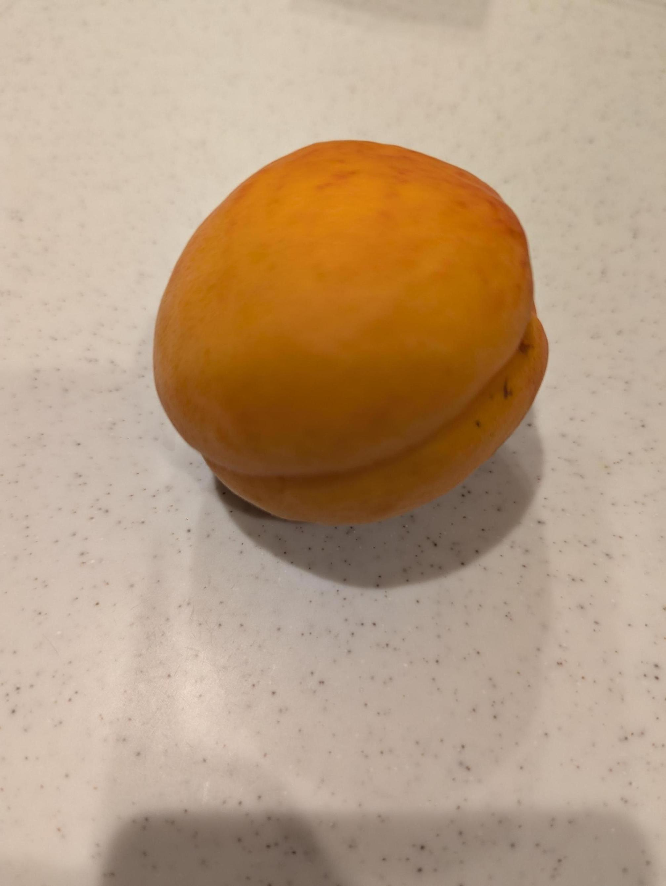

ハーコットという果物がうますぎる。
ハーコットはあんずの一種だ。普通あんずは酸っぱくてそのまま食べるには向かないのだが、ハーコットは甘く、そのまま食べられるよう改良されたらしい。
ハーコットは、桃の純粋下位互換のような印象を受ける。見た目も桃より小さく、桃のような筋が外側に入っており、食べるとわかるが種の感じが桃とそっくりだ。
味は甘く、いい意味で特徴がない。シンプルに甘くてみずみずしくて美味い、そういう果物だ。皮をむかずに食べて、種だけ簡単に取り出せるのも良い。
最近、バランスチェア、昇降デスクといったものに興味があって困っている。今度実物を見に行く予定。でも、体の調子はこまめに動くこと（と、睡眠と運動と食事）でしかどうにもならない気はしている。